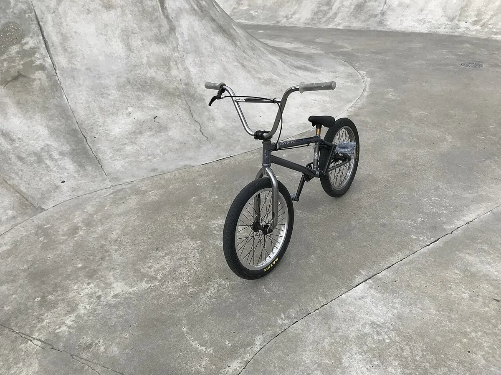

Тип велосипеда
BMX
BMX
Маленький прочный велосипед на 20-дюймовых колёсах для трюков и гонок.
Название — от «bicycle motocross». BMX появился в начале 1970-х в Калифорнии, когда дети стали повторять мотокросс на велосипедах. Гоночный BMX с 2008 года входит в программу Олимпийских игр, фристайл (BMX Freestyle) — с 2021 года (Токио-2020).
Одна передача, колёса 20" (ETRTO 406), прочная рама, часто гиропятка (rotor) для вращения руля, пеги для трюков.
Отличительные черты
- Колёса 20"
- Одна передача
- Очень прочная рама
- Задний тормоз или вовсе без тормозов (во фристайле)
Уход
Следите за натяжением цепи, затяжкой шатунов и педалей, состоянием втулок.
